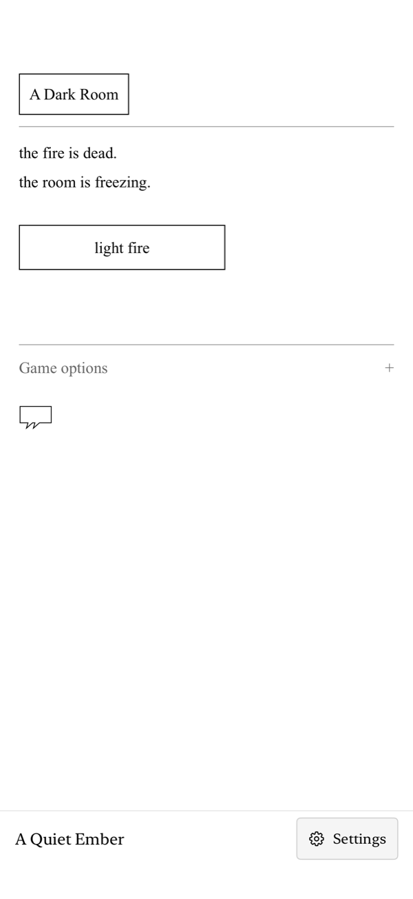
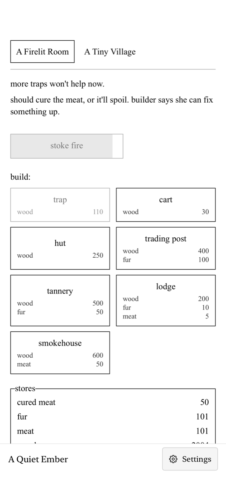
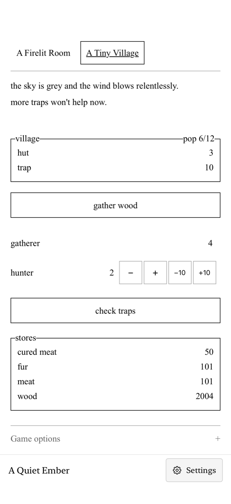

002 · iPhone & iPad
A Quiet
Ember.
A cold room.
A fire. A world to discover.
Begin with a single action. Gather what you need, build a settlement, and venture into the unknown in a quiet, text-driven adventure.
Follow the emberIn preparation for iPhone and iPad.
One small action. An unfolding story.
Tend the fire.
See what follows.
A little warmth is only the beginning. Gather resources, make tools, and balance the needs of a growing settlement. New places and possibilities emerge as you play.
When you are ready, pack supplies and leave the safety of the room. Explore an unfamiliar world, make decisions, and discover the story at your own pace.
Swipe to explore the screenshots


A small beginning.
One room and one action. Let the story unfold.


Make a place to stay.
Gather materials, craft tools, and grow your settlement.


A growing community.
Assign workers and balance the needs of your village.
Screenshots from the iPhone interface, shown at different stages of play. Also designed for iPad.
A little less noise.
Your adventure.
At your pace.
Play without an account or an internet connection. Progress stays on your device. Export a save when you want a separate backup.
Can I play offline?
Yes. The game, sound, and translations are bundled with the app. Links you choose to open use your browser.
Does the game keep running while I’m away?
Progress is saved on your device. iOS can suspend the game in the background; the app does not add catch-up production while it is closed.
How do I keep a backup?
Open Settings and choose Export save. Use Import save to restore a native JSON backup. The game’s original save-code menu uses a separate format; use the matching import control.
Is this the official mobile edition?
No. A Quiet Ember is an independent iOS adaptation of the open-source browser game A Dark Room by Michael Townsend, doublespeak games, and contributors. It is separate from the official A Dark Room mobile edition.
When can I play?
A Quiet Ember is in preparation for iPhone and iPad. We’ll add a verified App Store link here when it is publicly available.
The fire is being tended.
An adventure in preparation.
Find help, read about privacy, or explore the source.
Based on A Dark Room, the browser game by Michael Townsend, doublespeak games, and contributors.
Independent iOS adaptation by MinimalisticGamers. Not affiliated with or endorsed by the original creators.